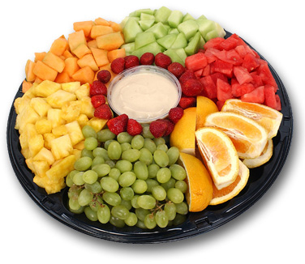

|
In botany, a fruit is a part of a flowering plant that derives from specific tissues of the flower, one or more ovaries, and in some cases accessory tissues. Fruits are the means by which these plants disseminate seeds. Many of them that bear edible fruits, in particular, have propagated with the movements of humans and animals in a symbiotic relationship as a means for seed dispersal and nutrition, respectively; in fact, humans and many animals have become dependent on fruits as a source of food. |
 |